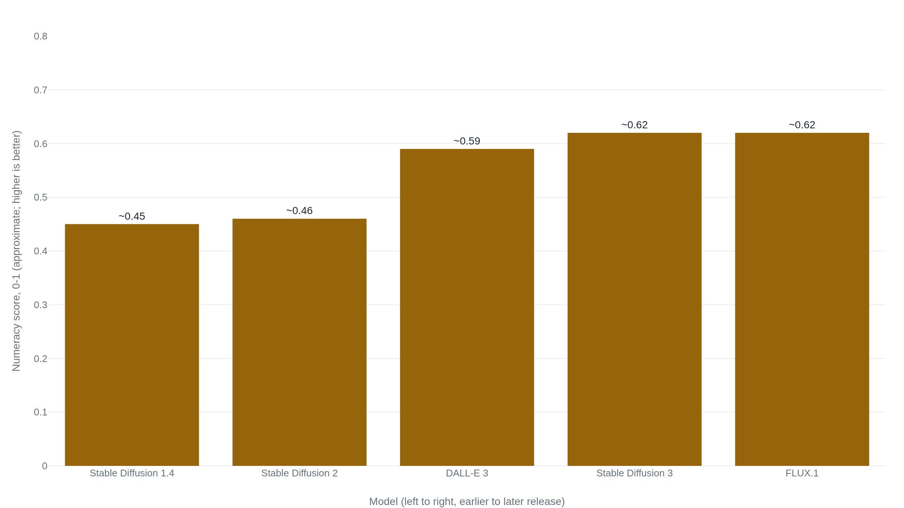

An image generator turns "six apples" into "some apples" before it draws a single pixel
Accuracy holds up for the first handful of objects, then collapses the same way in system after system tested.
Why this matters
You have almost certainly asked an image generator for a specific number of something, a hand of cards, a row of icons for a slide, a six-pack of apples for a grocery ad, and gotten back a count that was close but not right. That is not a one-off glitch you happened to hit. It is what these systems do, measurably, across every current model tested. The reason is traceable: a prompt-reading step that barely registers numbers, handed to a painting step that was never built to hold one. By the end of this lesson you can point to the exact place in the pipeline where "six" stops being a number and becomes a suggestion, say why that gets worse as the count rises, and tell which fixes for it are proven and which are still open.
- 01
- An image generator turns a field of static into your picture by removing the noise a little at a time: the denoising process this lesson's painting step relies on.
- 02
- An image generator never counts the fingers it draws: the same "nothing counts" pipeline, on anatomy rather than discrete objects.
- 03
- A generated image gets its letters wrong before the picture is ever drawn: another case where the prompt loses information at the reading step, before the painting step ever starts.
What the Model Receives From "Six Apples"
Type "six apples" into an image generator and you may get five, or seven, or an arrangement loose enough that it is not obviously any number at all. Across fifteen current text-to-image systems tested on requests for one to fifteen objects, every one of them gets the count wrong somewhere in that range, and how often depends heavily on how high the number is.1 The pattern is common enough that a public explainer could already name it in one line: these models have no firm sense of a quantity like four, so asking for an exact number runs straight into that gap.2
The wrong count is not a rendering slip, the way a smudged line might be. It sits upstream of the canvas entirely, in how the word "six" gets represented before generation starts, and in a painting process that was never built to place a counted set of anything.
The Text Encoder Barely Registers the Number
Before a single pixel exists, the prompt has to become something the painting step can use: a fixed-length list of numbers standing for what the sentence means, produced by a text encoder. Nearly every current text-to-image system leans on the same family of encoder for this, the kind introduced as CLIP, whose text side is a twelve-layer Transformer that reads the prompt and takes its final activation as the sentence's meaning.3 CLIP's own authors are direct about where that meaning falls short. In their list of the model's limits, they name counting outright: CLIP "struggles with more abstract and systematic tasks such as counting the number of objects in an image."3
A later benchmark tested how far that struggle reaches. Across more than fifty thousand test cases probing whether these encoders track word order, and whether they connect the right attribute to the right object, CLIP-style encoders score close to chance on attribution and lose almost all sensitivity to order.4 The researchers trace the cause to how the encoder was trained, not to some accident of scale. The training task rewards matching an image to its caption. On the datasets used, that match can be won without the encoder ever needing to track order or exact composition, so it never learns to.4 Call this the encoder's checklist: it can register that apples are present, and largely ignore how many.
A separate study measured the checklist problem specifically on count, and found the same shortcut at work. Asked to match an image to a caption naming an exact count, a standard CLIP encoder got it right only about 32 percent of the time. Fine-tuned specifically on count-labeled pairs, the same architecture got it right about 76 percent of the time.5 The gap traces back to the captions the encoder learned from. Photos captioned with an exact count get rarer as the count rises. Past about six objects a caption typically says "a group of" or "many" instead of naming a number, so the training data itself barely uses the word "six."5 Counting also does little for the matching task the encoder is actually trained on, since which objects appear is a stronger signal than how many, so nothing in training pushes the encoder to learn it.5 By the time "six apples" reaches the painting step, what survives in the encoder's checklist is mostly "apples."
The Painter Never Gets a Tally to Check Against
A diffusion model paints by starting from noise and repeatedly guessing what to remove, dozens of times, until a picture remains. The prompt steers that guessing through cross-attention: at every step, every patch of the forming image looks at the encoder's checklist and asks which of its entries apply here. The architecture that made this practical describes its own purpose plainly: cross-attention layers make diffusion models "powerful and flexible generators for general conditioning inputs such as text."6 What that mechanism hands every patch is the same checklist, spread across the whole canvas at once. It is built to answer "does 'apple' belong here," not "is this the sixth apple."
Researchers working to fix this describe the gap on the painting side in almost identical terms to the encoder's. Even in systems that succeed at nearly everything else about a prompt, controlling exactly how many objects appear is, in their words, "surprisingly hard."7 Getting a count right would require the model to track a separate identity for every individual instance it paints, including instances that end up looking identical, and add them up while the image is still forming.7 Nothing in an ordinary diffusion pass does either of those things. There is no step anywhere in the process that holds a running count or checks the finished image against the number in the prompt. Whatever count comes out is whatever the training data made statistically likely for that scene.
The two blind spots are separate, and closing only one still leaves the count wrong. A quantity-aware encoder handed to today's painting step would still be read by a process with no tally sheet. A painting step with a tally sheet would still be steered by an embedding that already treated "six" and "some" as close to interchangeable. "Six apples" comes out wrong because of what both steps fail to do together, not because of either one alone.
Five Objects Are Usually Right, Eleven Rarely Are
Google's own Imagen paper states the same weak point about the encoder its system relies on, plainly and in passing: "CLIP is ineffective at counting."8 The paper's own evaluation set, DrawBench, spends one of its eleven prompt categories specifically on getting the number of objects right, alongside spatial relations and text rendering, because count is a known trouble spot across this entire family of systems.8
The failure is not a flat coin flip, though. Tested across fifteen current models on requests from one to fifteen objects, accuracy runs roughly 60 to 80 percent when the request is for five objects or fewer, falls to roughly 10 to 30 percent for six to ten, and drops under 10 percent for eleven to fifteen, in nearly every model tested.1 That shape matches the caption scarcity the encoder studies found: training data is thick with pictures captioned "three apples" and nearly empty of ones captioned "thirteen apples," so past a handful the model has barely seen the number it is being asked to paint.
The gap is also closing, generation over generation, on a benchmark built to measure this exact weakness. Scored from 0 to 1 on prompts asking for one to eight objects, Stable Diffusion's earliest public model comes in around 0.45. Two model generations later, Stable Diffusion 3 and FLUX.1 both score around 0.62 (Fig. 1).9 That is real progress, and it still falls well short of getting the count right most of the time.

The Fixes That Work Reach the Encoder and the Painter
Every fix that has actually closed part of this gap acts directly on one of the two blind spots just traced, rather than hoping more of the same training data eventually solves it on its own.
On the encoder side, training it against pairs designed to trip up the shortcut it learned, swapped word order, swapped attributes, closes much of the gap on order and composition that the encoder benchmark measured.4 Training it specifically on count-labeled images does the same for quantity: the fine-tuned encoder mentioned earlier went from right about 32 percent of the time to right about 76 percent of the time.5 On the painting side, a method that identifies and corrects individual object instances partway through denoising, instead of leaving the final count to whatever the noise settles into, does the same for the painter. It roughly doubles count accuracy over an unmodified baseline on one counting benchmark, raises it by close to two-thirds on another, and comes out ahead of DALL-E 3 on both.7
One fix that sounds obvious does not work: rewording the prompt. Testing four different ways of refining a counting prompt across the same fifteen models found that every one of them made counting worse, not better, cutting average accuracy by more than 40 percent relative to the plain request.1 The fix is not something a user can type their way into.
That leaves a clean line between settled and open. Settled: no part of the ordinary path from prompt to pixels holds a count anywhere, and nothing in either the encoder's usual training or the painter's usual denoising pass needs one for everything else these systems do well.7 Open: whether the fix that eventually holds is a count-aware encoder, a painting step with a tally sheet built in, or most likely both together. Also open is how far each can be pushed before some other part of the pipeline becomes the next limit.
The takeaway
Ask for six apples and the number that comes back is a guess built from a checklist that mostly registered "apples," painted by a process that spreads that checklist across the canvas with no tally sheet anywhere in the loop. Both gaps are real, and neither one alone explains the wrong count. It takes both together. The failure has a shape: small requests, five objects or fewer, come back right most of the time, and the odds fall fast past that point, in system after system tested. Training an encoder or a painter specifically on count closes real ground, rewording the prompt does not, and the newest systems already count better than the oldest ones did, without yet counting reliably.
- 01
- Make It Count (Binyamin et al., 2024): the mid-denoising method that corrects object counts as the image is still forming.
- 02
- Teaching CLIP to Count to Ten (Paiss et al., 2023): how a count-aware encoder is built and how much of the encoder-side gap it closes.
Sources
- Guo et al. · Text-to-Image Diffusion Models Cannot Count, and Prompt Refinement Cannot Help
- The Conversation · If AI image generators are so smart, why do they struggle to write and count?
- Radford et al. · Learning Transferable Visual Models From Natural Language Supervision (CLIP)
- Yuksekgonul et al. · When and Why Vision-Language Models Behave Like Bags-of-Words, and What to Do About It?
- Paiss et al. · Teaching CLIP to Count to Ten
- Rombach et al. · High-Resolution Image Synthesis with Latent Diffusion Models
- Binyamin et al. · Make It Count: Text-to-Image Generation With an Accurate Number of Objects
- Saharia et al. · Photorealistic Text-to-Image Diffusion Models with Deep Language Understanding (Imagen)
- Huang et al. · T2I-CompBench++: An Enhanced and Comprehensive Benchmark for Compositional Text-to-Image Generation